Happy Holidays!


Dear friends, 2012 was very challenging for me but I felt that staying in touch with all of you was so fundamental that I decided to write this year’s newsletter anyways. I have been writing these Holiday newsletters for some time and this year is the first time I do it on my own behalf. As most of you know, Miriam decided to pursue life on her own at the beginning of this year. As hard as it might be, life must go on somehow. What follows is an account of a number of things that happened throughout the year and touched my heart in positive, and sometimes, unexpected ways.
On with the show...

Late in 2011, Fiona and I flew to Chile to visit family and attend my Father’s 80th birthday. There we met family and friends and we did a little sightseeing too.

My Dad is in the center of the picture flanked by his wife and his brother Gonzalo.
When we arrived to Santiago, my Mother had recently broken a shoulder. With her arm in a cast, her mobility was severely impaired. All the same, she enjoyed her time with Fiona.
We also met uncles and cousins besides my Mother and Father. In particular, my uncle Sergio, who was recovering from a serious stroke. Here he is with his Daughter Magdalena.
I also had the fortune to visit with friends from different periods of my younger life, including classmates from grade school, High School, and College. If you find yourselves in one of these pictures, you know why you are here and you know you are loved by me. If you do not see your picture, my apologies to you but I can fit only so many pictures in this newsletter. You know you are close to my heart nonetheless.
The woman below is my friend Millaray whom I had not seen since 1982 and who now lives in Dominican Republic.
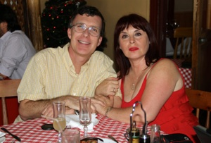
The man below, is my dear friend Jaime Plaza who lives in Australia and whom I had not seen since the mid-80s. He is an outstanding nature photographer.
Fiona and I visited Santiago...
and Valparaiso...
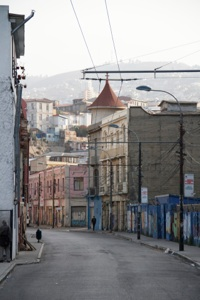
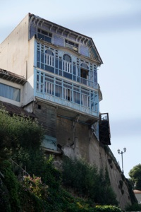
Spent New Year’s in Viña del Mar watching the fireworks.

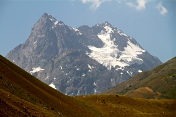
And visited the Cajón del Maipo in the Andes mountains. Here is the El Morado glacier.

Later in the year, Fiona participated in her band activities where she played French Horn among students from all of Carlsbad Middle Schools
As usual, in late Winter the camellias in front of the house bloomed bringing their remarkable and beautiful symmetry.

During Spring break, I travelled with Pam, Bill and Pete Heidler to Utah and Arizona where we hiked in Zion National Park, Grand Canyon, and Antelope Canyon among other places.
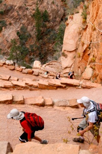

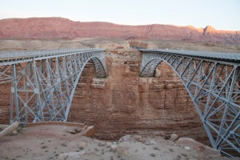


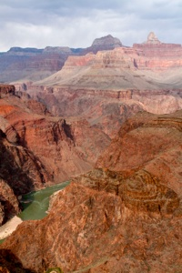
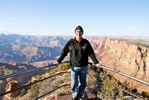
The hike down the Grand Canyon was spectacular. Along the way, we saw a herd of mule deer.


In May, Fiona graduated from Valley Middle School with excellent grades and officially became a High School student much to her delight. Miriam and I are very proud of her.
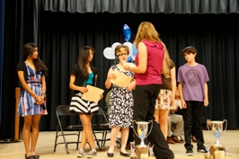

In July, Fiona and I visited Seattle. It was a great vacation. We went all over town.
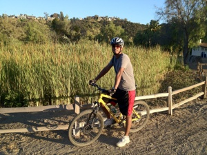
During the Spring, I became involved in mountain biking and went riding frequently with my friend Vijay.

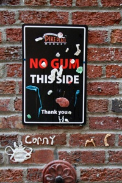
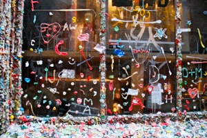

Pike’s place market and the gum wall.
Seattle Art Museum.
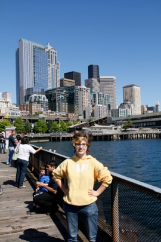
Seattle Waterfront.

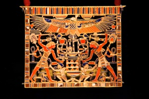
King Tut exhibit. Superb!
Chihuly garden.
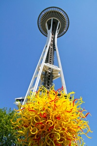
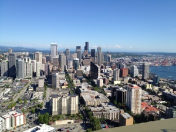
Space Needle.

Mt. Rainier.


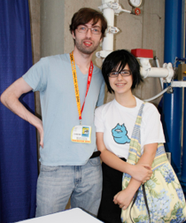
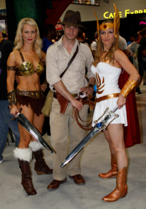
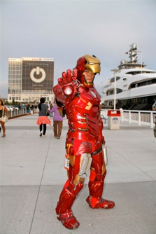
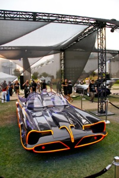
In July, Fiona and I attended Comic-con in San Diego
Here is Fiona with her idol, author Andrew Hussie.
This is the original batmobile from the TV show.
During the Spring I became interested in making photo portraits and Fiona became the model of choice. Here she is in her homecoming dance dress.

Here are some nice shots of Balboa Park and Coronado which we visited during the Fall of 2012.
And here is Fiona having fun with Squiggles our now full-grown Okeetee albino corn snake.
Have a great 2013!
I wish all of you the very best this Holiday Season and I look forward to seeing or hearing from you next year.
December nights at Balboa Park.
Fiona is now playing cello at Carlsbad High School’s String Orchestra. Here she plays the Barber of Seville in the Fall concert.
UCLA volunteer drive at the San Diego Food Bank, packing food for holiday meals.
Santiago’s Cathedral in Plaza de Armas
Santiago’s presidential palace, la “Moneda” (formerly a mint hence its name).